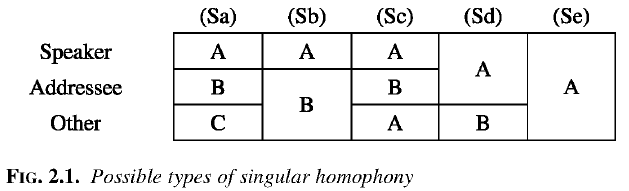
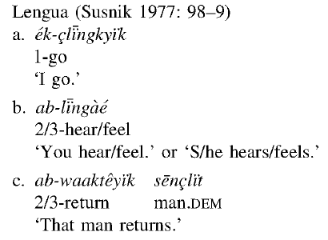
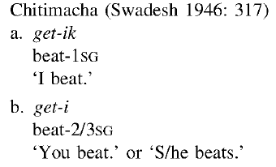
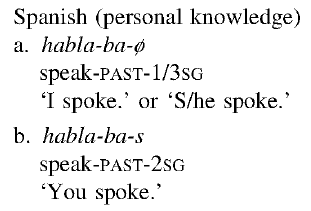
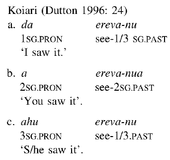
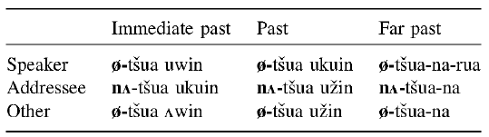
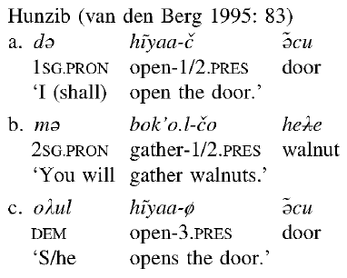
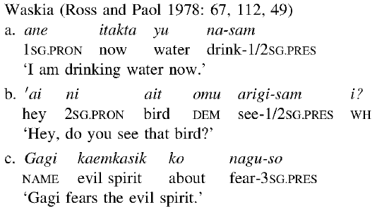
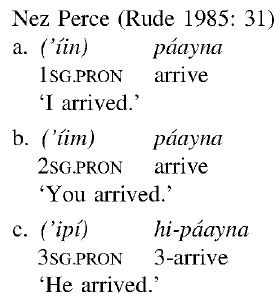
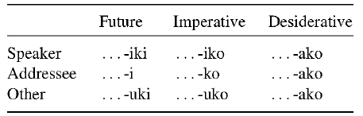

Person:
Typologie
22 November 2019
Person
- Was bedeutet Person?
- Im Deutschen:
| Singular | Plural | |
|---|---|---|
| 1 | ich | wir |
| 2 | du | ihr |
| 3 | er/sie/es | sie |
Person: Referenten
- Wichtige Begriffe:
- S: Sprecher (speaker)
- A: Zuhörer (addressee)
- O: Andere Person (weder Sprecher noch Zuhörer).
- Im Deutschen gibt es ein Unterschied zwischen alle diese Personen.
Person: Referenten
- Im Maori ist es anders
| Singular | Plural | Referenz Bedeutung |
|---|---|---|
| au | taatou | Sprecher (und Andere, nicht Zuhörer) |
| — | maatou | Sprecher, Zuhörer (und Andere) |
| koe | koorua | Zuhörer (und Andere, nicht Sprecher) |
| ia | raatou | Weder Sprecher noch Zuhörer (und Andere) |
Person: Sanapaná
| Person | Singular | Plural | Bedeutung |
|---|---|---|---|
| 1 | ko'o | enenko | Sprecher (und Andere) |
| ￢1 | hleja | hlenga | Nicht der Sprecher (und Andere) |
Mögliche Muster
Niederländisch
-
- ik
- ich
-
- loop
- lauf.1sg
'Ich laufe'
-
- jij
- du
-
- loop-t
- laufen-2sg
'Du läufst'
-
- hij/zij/het
- er/sie/es
-
- loop-t
- laufen-3sg
'Er/sie/es läuft.'
Lengua
Chitimacha
Spanisch
Koiari
Ika
Sd
English
- Im Englischen, gibt es homophanie im Verben zwischen 1 + 2.
I walk
You walk
He/she/it walks
Hunzib
Waskia
Nez Perce
Waskia
Mögliche Muster
| Gruppe | Beschreibung |
|---|---|
| S+S | Sprecher + Sprecher |
| S+A | 'wir' inklusiv Zuhörer, nicht andere |
| S+O | Sprecher, andere, nicht Zuhörer |
| A+A | Zuhörer + Zuhörer |
| A+O | 'y'all' = Zuhörer und andere |
| O+O | 'sie': komplete |
| S+A+O | 'wir': komplete |
Mögliche Muster
- Finden wir alle?
- Wir brauchen eine bestimmte morphologische Form.
- S+S: nicht.
- A+A nicht.
Aktuelle Muster
| Gruppe | Beschreibung |
|---|---|
| S+A | 'wir' inklusiv Zuhörer, nicht andere |
| S+O | Sprecher, andere, nicht Zuhörer |
| A+O | 'y'all' = Zuhörer und andere |
| O+O | 'sie': komplete |
| S+A+O | 'wir': komplete |